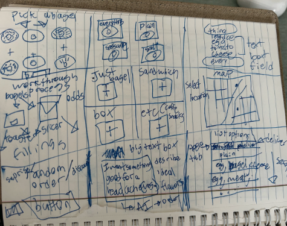
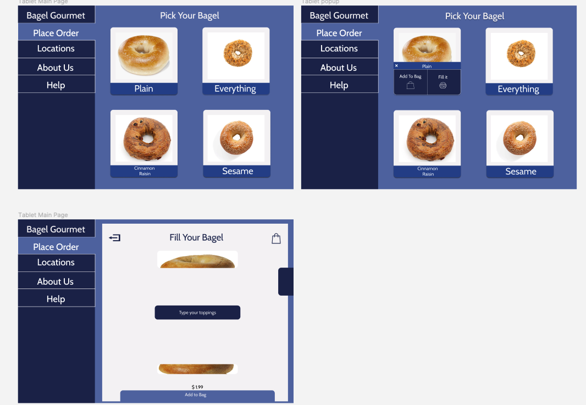

The Problem
Timeline: 2-weeks
Bagel Gourmet is the name of my favorite place to grab a hot breakfast sandwich.
The only problem is that while their food is great, their website leaves a bad taste in my mouth.
Update: Their website has been actually taken down since I did this project, but feel free to look at it here.
I thought this website would definitely deter prospective customers who might think the store is going to be old and outdated based on their website, so they need a website that matches the quality of their food.
What specifically doesn't work about the old website?
It is one thing to say that the website is messy and has poor style, but I wanted to dig deeper.
- There is no way to build a cart and order.
- There is no consistent coloring or sizing.
- There are no clear and distinct navigational tools.
- The layout is asymmetrical and heavily weighted.
- There is no consistent HTML tag hierarchy.
- This is a menu for a bagel restaurant and it starts with Mexican options.
These pain points helped me understand the specific parts of the website that I wanted to improve. With them listed out, I can better understand how to modernize this website.
Brainstorming New Ideas
Now, I knew what I wanted to improve upon, but I didn't know what I wanted the new website to look like. I only knew what it couldn't be.
I sat down and quickly iterated through a few rough sketches. My main thought when completing these was that I wanted them to be modern and concise.
The two ideas that I was really drawn to were #2 and #3, located in the top row. The grid-based ordering system was a simple, yet clean design that could be applied well to almost any store.
But, I did think that the universality of the design might be a downside. I wanted to create something that represented the great, unique quality of the store, and I wasn't quite sure that the grid design would do that.
This is why #3 stood out to me. In #3, the bagel would be visually filled by your toppings as you create your bagel sandwich.
The idea of ordering your food using a text-based menu with a strong visual metaphor was very compelling.
With these details, I realized that I could combine them into different segments of the user experience.
How the Sandwich Gets Made
Next, I took a step back and thought about how users would access the website.
After interviewing customers, I heard that most customers would like to order ahead from home.
Customers mentioned wishing to order from either mobile or desktop devices, so I knew that my website would have to include an adaptive design.
Mobile Site
For the mobile display, I wanted to have a scrollable menu as the central display. I collapsed most of the less used features into accessory buttons that were spaced around the edge of the screen.
Tablet Site
I wanted the tablet display to be more comprehensive. Here, the larger screen resolution can be used to have a permanent navigation bar on the side, while the main section can be used to find items.
Desktop Site
The desktop display needed to provide the user with the most information. To do this, I brought the bag to the left side of the screen. I also transitioned to a horizontal navigation bar to further the visual hierarchy of the website.
Final Touches
With my wireframes created, I now better understood what my final design would look like. However, the wireframe processes did make me want to increase the visual similarity across devices.
As a result, I created a style guide which defined what the key components of my website would look like.
The fonts and elements were chosen to evoke the look of the brick and mortar store. This would help the store have a unified brand experience both online and in-person.
Specifically, I opted for a blue-toned website which matches Bagel Gourmet's store interior. I also went for a medium, rounded, sans-serif font to emphasize the casual, updated nature of the website.
Orders Up
Mobile
Tablet
Desktop
The final high fidelity designs show the progress of the website. However, I still was struggling to fully understand the mobile-user experience, so I decided to make it interactable.
I was initially hesitant about using the sandwich filler feature on a mobile device, but user testing on store customers made me feel much more confident about its implementation.
Users specifically mentioned how the visual design both "makes sense" and makes the process more "fun!"
To get a sense of what the final HTML and CSS of the website would look like, I decided to create an adaptive version of the homepage.